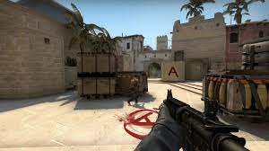

Counter Strike:Global Offensive
CS:GO to prawdopodobnie najpopularniejsza strzelanka pierwszoosobowa na świecie. CS:GO zawiera wiele trybów gry, ale najpopularniejszym jest terroryści VS antyterroryści. W tym trybie gry kilkunastu graczy jest podzielonych na dwie drużyny; terroryści i antyterroryści. zadaniem terrorystów jest wysadzić ładunnek wybuchowy w jednym z wyznaczonych miejsc na mapie. Zadaniem antyterrorystów jest nie doppuścić do wysadzenia bomby w określonym czasie. Rozgrywka jest podzielona na 10 minutowe rundy, gdzie na początku każdej gracze kupują broń za pieniądze uzyskane podczas poprzednich rund. CS:GO ma bardzo rozbudowaną scenę E-sportową, z teamami takimi jak:
Teamy E-sportowe
- VIT Team Vitality
- FaZe FaZe Clan
- MOUZ MOUZ
- VP Virtus.pro
- NAVI Natus Vincere